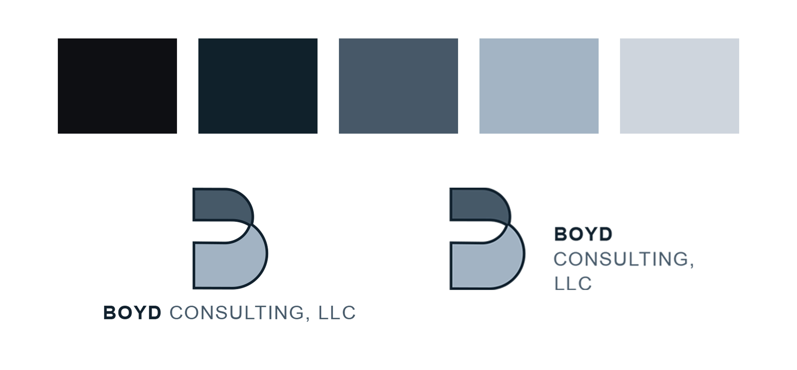
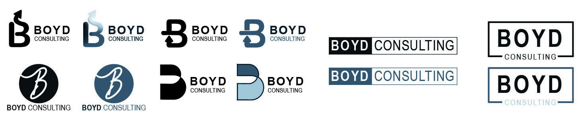
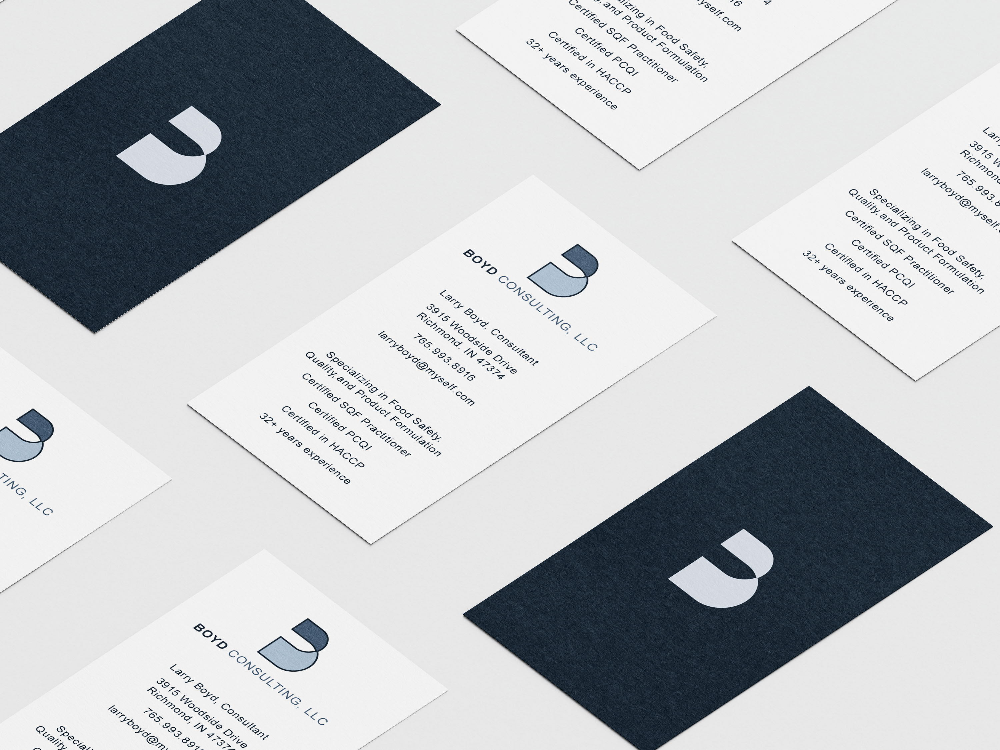
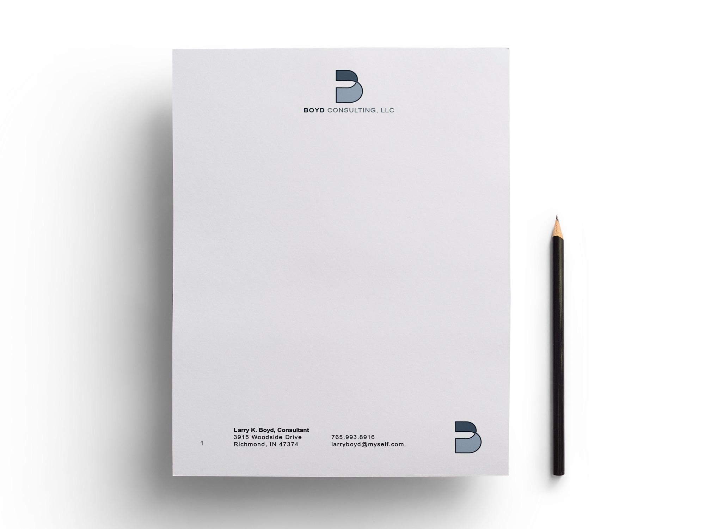
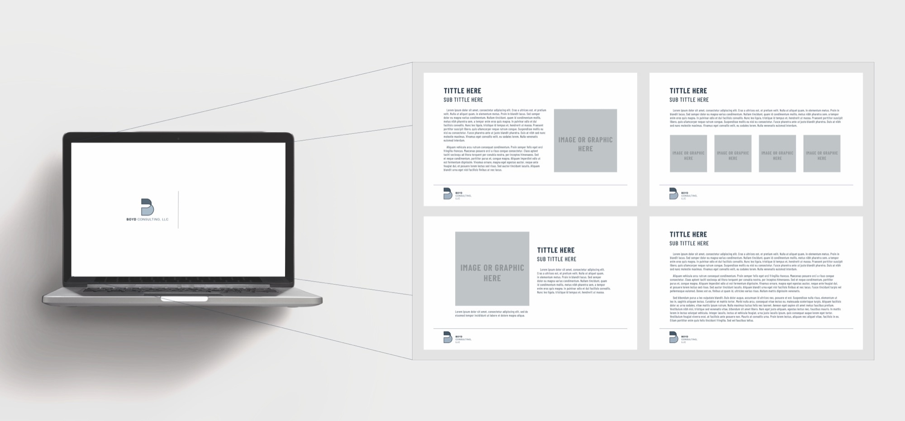

Boyd Consulting
Brand Identity · Collateral Design
Boyd Consulting LLC is a food safety, quality, and product formulation consulting firm that needed a brand identity to match the professionalism of their work. They came in with a clear direction, a strong emphasis on the B in Boyd and a clean blue and black color palette. I designed their full brand identity from the ground up including the logo, business cards, letterhead, and a set of PowerPoint slide templates they could use across their business. The result is a cohesive, polished identity that feels credible and confident in a highly specialized industry.




